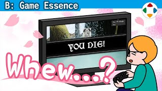
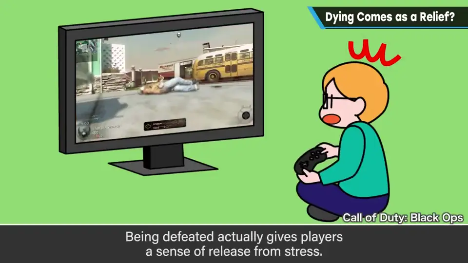
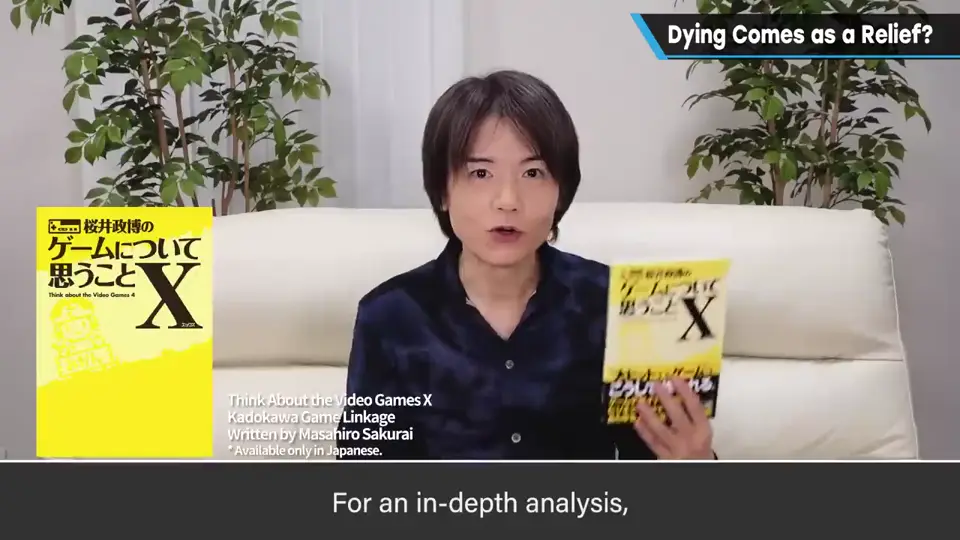
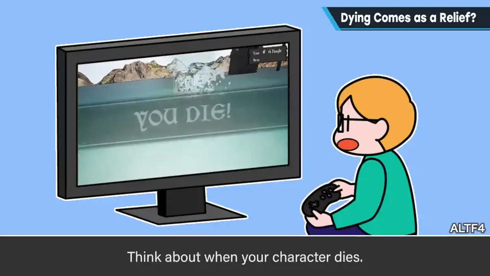
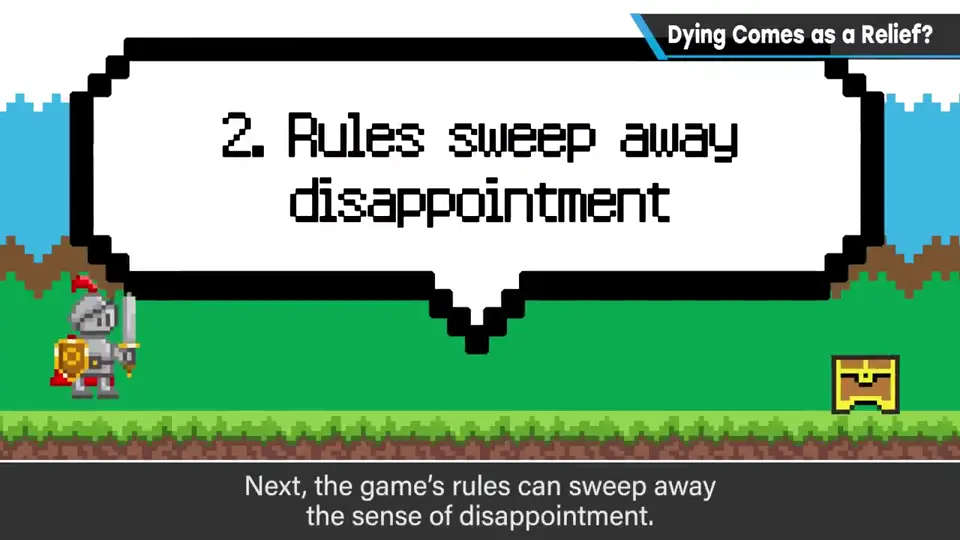
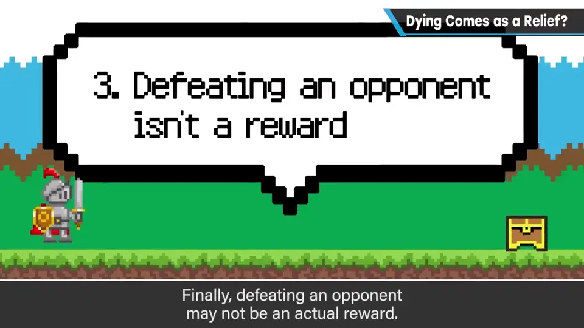
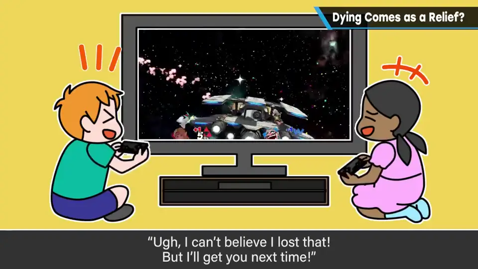

速览
据说海外一项研究发现：对战型 FPS 中，打倒对手时会感到不安，被打倒时反而松一口气。听起来应该相反，但想想确有道理——这是从压力中解放的感觉，也确实是游戏的乐趣。详细内容见樱井的著作《樱井政博的游戏杂谈 X》（ゲームについて思うこと X）第 148 页，这里只概括：① 游戏角色可能不是感情投入的对象——如果是，被打倒应该很沮丧；② 规则冲淡了遗憾——不论在限定时间内继续还是新开一局，重开都很快，就能一局接一局地玩、不留下阴影；③ 打倒对手本身不是回报——最终目的是获胜，没决出胜负前还不能大意，打倒对手时也许看到的是自己被打倒的未来。樱井尤其想强调：打倒的一方和被打倒的一方都觉得好玩，才是最好的娱乐。输了会不甘心、心情不好，但还是想再来一局——包括重试的动线在内都值得好好思考。对战并不一定等于压制带来的快感。
1. 打倒对手时不安，被打倒时安心？ 0:03
据说海外某项研究发现：在对战型 FPS 中，打倒对手时会感到不安，被对手打倒时反而松了一口气。
一般会觉得应该反过来吧？但仔细想想，确实有迹可循——这是一种从压力中解放的感觉，也确实可以说是游戏的乐趣。


详见樱井的著作《ゲームについて思うこと X》第 148 页，这里粗略概括他的想法。
2. 三个可能的原因 0:43
| 原因 | 说明 |
|---|---|
| 1. 角色可能不是感情投入的对象 | 若是，被打倒时应该很沮丧，但似乎并不是 |
| 2. 规则冲淡了遗憾 | 不论在时间内继续还是另开一局，重来都比较快，一局接一局，不会拖着情绪 |
| 3. 打倒对手本身不是回报 | 最终目的是获胜；在还没决出胜负的时刻不能大意——打倒对手时，也许看见的是自己被打倒的未来 |



3. 双方都觉得好玩，才是最好的娱乐 1:36
输了会不甘心、心情不好，但还是会玩下一局——包括重试等动线在内，都值得好好思考。

对战并不一定等于「压制带来的快感」。
自测题
1. 那项研究发现了什么出人意料的结果？
对战型 FPS 中，打倒对手时会感到不安，被对手打倒时反而松了一口气。 0:03
2. 樱井列出的三个可能原因是什么？
①角色可能不是感情投入的对象；②规则（重开很快）冲淡了遗憾；③打倒对手本身不是回报，最终目的是获胜，还不能大意。 0:43
3. 樱井认为什么是「最好的娱乐」？
打倒的一方和被打倒的一方都各自觉得好玩；输了不甘心但还想再来——对战不等于压制的快感。 1:38